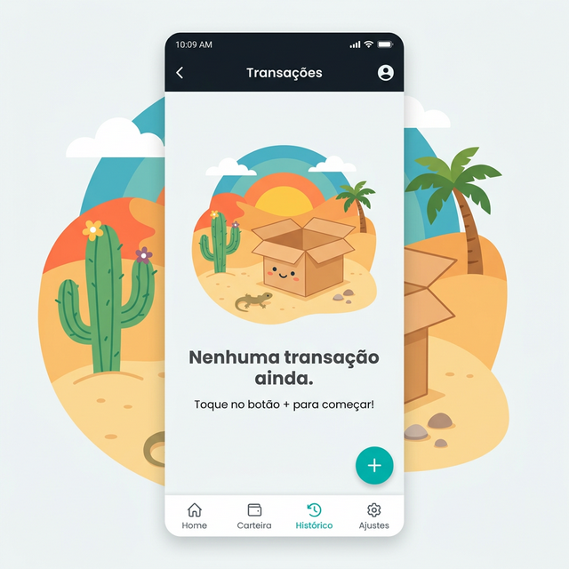

Estudo de Caso 12 — Metadados de Loja e Error Handling
Objetivo da Semana
Gerar um polimento aprimorado UX ("Empty States" - quando a visualização não for possível ou estiver vazia) e amigável (tratamento de exceções que poderiam crachar), finalizando a semana preparando o dossiê textual da App Store que embasará a publicação.
Passo a Passo da Atividade
Ligue o "Error Handling" True nas operações de leitura e gravação no servidor para mostrar Snackbars (ex: Você está sem conexão com a internet) caso falhe. Configure imagens atrativas de caixas de ilustrações caso uma leitura ListView retorne 0 itens localizados do banco.
Escreva o texto final de "Short Description", e as Linhas Longas detalhadas simulando o que o consumidor observará para decidir baixar o App na janela da Loja oficial do Google Play.
Exemplo de Prompt: "Atuando como um Especialista em ASO e Marketing de Apps, crie uma 'Descrição Breve' e as 3 primeiras linhas de uma 'Descrição Completa' cativante para..."
Capture as Views completas e desenhe as imagens ilustradas em molduras de celulares contendo frases curtas e chamativas que servem de introdução nas lojas de publicações móveis na Galeria de Prints do App (Sua Vitrine).
Para concluir as atividades desta semana, reúna todas as informações e artefatos gerados nos passos anteriores e preencha o template oficial de entrega. Faça uma cópia do documento para a sua conta Google e compartilhe-o com o professor.
Acessar Template: Polimento Promocional (ASO) e Experiência do Usuário
📱 Estudo de Caso: FinanCampus
Veja como o grupo do FinanCampus preparou o app para publicação.

Error handling implementado em 5 Actions:
- Insert de transação: SnackBar "Não foi possível salvar. Verifique sua conexão."
- Login: Alert Dialog "E-mail ou senha incorretos." (sem expor o erro técnico do Firebase)
- Cadastro: Alert Dialog "E-mail já cadastrado."
- Carregamento da lista: empty state com ícone e texto "Nenhuma transação ainda. Toque em + para começar!"
- Perda de conexão: SnackBar "Sem conexão com a internet. Tente novamente."
Metadados da Play Store preenchidos:
- Nome: FinanCampus — Controle de Gastos
- Descrição breve: "Controle seus gastos mensais de forma simples e visual."
- Categoria: Finanças
Política de privacidade: publicada em página do Notion (notion.so/financampus/privacidade), descrevendo coleta de e-mail e dados financeiros informados pelo usuário.